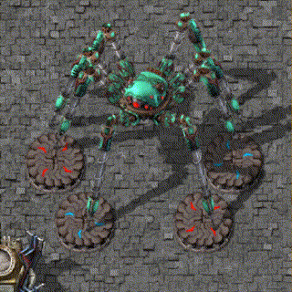

Factorio es un juego de simulación y gestión de recursos donde los jugadores exploran, construyen y gestionan una fábrica automatizada en un mundo alienígena. El objetivo principal es construir y expandir la fábrica, optimizando la producción y la eficiencia para sobrevivir, investigar tecnologías nuevas y eventualmente lanzar un cohete espacial. Los jugadores enfrentan desafíos como la gestión de recursos, la defensa contra criaturas alienígenas hostiles y la optimización de la automatización para maximizar la producción. Es conocido por su profunda jugabilidad, complejidad estratégica y capacidad de modificación por parte de la comunidad de jugadores.
En Factorio, los jugadores comienzan con recursos básicos como hierro, carbón y cobre, y trabajan para construir una infraestructura cada vez más compleja. Esto implica la creación de máquinas, cintas transportadoras, brazos robóticos y otros dispositivos para automatizar la producción y transporte de recursos. Los jugadores diseñan y optimizan sus fábricas para maximizar la eficiencia y la producción.
A medida que los jugadores expanden su operación, deben lidiar con las amenazas del entorno alienígena, que incluyen criaturas hostiles y contaminación. Esto implica la exploración del mapa para obtener recursos, encontrar nuevos yacimientos y asegurar la defensa de la fábrica mediante la construcción de muros, torres de defensa y otras estructuras.
Factorio presenta un sistema de investigación que permite a los jugadores desbloquear nuevas tecnologías y mejoras para sus instalaciones. Esto incluye avances en la automatización, armamento, producción y gestión de recursos. A medida que los jugadores avanzan en la investigación, enfrentan desafíos más complejos y pueden construir instalaciones más avanzadas.
?